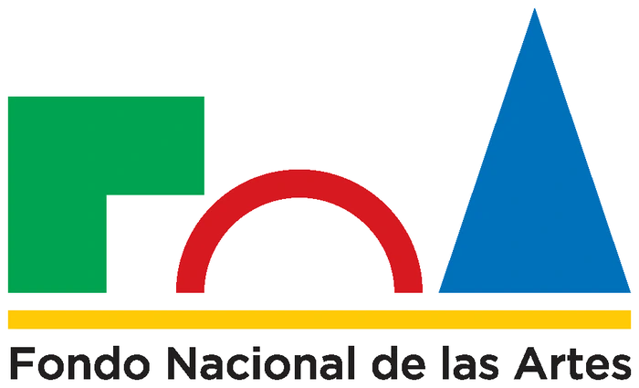
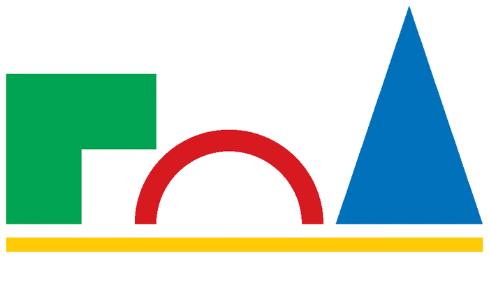

La forma del despojo
Dibujo

Dibujo


Hora trémula, díptico, 2024. Seleccionada Premio Argentino a las Artes Visuales Fundación OSDE, 6.ª edición.


Fiar la sombra, 2023. Mención especial de dibujo, 67.° Salón Manuel Belgrano, Museo Sívori.


Algunos rasguños disipan la llama (frente y dorso), 2023. Seleccionada Premio Argentino a las Artes Visuales Fundación OSDE, 5.ª edición.
Hora trémula, díptico, 2024Carbón sobre papel, 56 x 38 cm. Seleccionada Premio Argentino a las Artes Visuales Fundación OSDE, 6.ª edición.
Fiar la sombra, 2023Carbón sobre papel, 62 x 48 cm. Mención especial de dibujo, 67.° Salón Manuel Belgrano, Museo Sívori.
Fiar la sombra, 2023Carbón sobre papel, 62 x 48 cm. Mención especial de dibujo, 67.° Salón Manuel Belgrano, Museo Sívori. Vista de sala.
Algunos rasguños disipan la llama (frente y dorso), 2023Carbón sobre papel, 150 x 100 x 30 cm. Seleccionada Premio Argentino a las Artes Visuales Fundación OSDE, 5.ª edición. Imagen 1 de 2.
Dibujo


Rastros, 2021. Seleccionada Salón Nacional de Bahía Blanca, 2 Museos – Bellas Artes y MAC, Bahía Blanca, Pcia. de Buenos Aires.

Punto de inflexión, 2023. Seleccionada XVIII Salón de Artes Visuales Junín, Museo de Arte Contemporáneo Argentino (MACA), Junín, Pcia. de Buenos Aires.
Rastros, 2021Carbón sobre papel, 47 x 62 cm. Seleccionada Salón Nacional de Bahía Blanca, 2 Museos – Bellas Artes y MAC, Bahía Blanca, Pcia. de Buenos Aires.
Dibujo
De la ciudad al bosque, se tensa con cuidado una cuerda. Por debajo subyace un abismo que no es ni la ciudad, ni el bosque. El equilibrista no es sino la cuerda y su búsqueda no es el equilibrio sino el estado de riesgo.
Dibujo


Corto experimental, 2026
¿Soñarán las casas con quienes las habitan?Sostenida en una nostalgia anticipada, me despido de un estado transitorio, capturo la huella del tiempo deviniendo en materia. Recorro, de forma animal, el tiempo apacible de lo que pronto quedará cubierto por una inevitable piel. Me apura un afuera del que no puedo desentenderme: el paisaje del que empiezo a formar parte.
Este registro compone imágenes con las que mi casa podría soñar en la noche futura: ¿quién la construye?, ¿quién la habita? Trepo sus huesos, me desplazo entre el vacío y la suspensión, ocupo las ventanas que delimitarán un recorte fijo de lo externo.
Un lugar al que no voy a volver es documento de umbral, el borde exacto en que, al darle la bienvenida a una nueva forma, experimento la espesura del adiós: pulso vital que la casa conservará en sus cimientos, en su memoria nonata.
Este corto es, ante todo, un testimonio vincular: la conversación de tensiones sutiles dentro de una firme cuadratura: el tiempo, mi cuerpo, la materia y el espacio.
Idea y realización general: Agustina Recayte
Dirección audiovisual, cámara y montaje: Clara Aguillón
Colaboración artística: Julieta Crespi


Fotolibro
Por debajo de la puerta se desliza un papel. Lo levanto junto a las facturas a pagar y veo que es una nota manuscrita. El mensaje es ilegible, sólo logro reconocer el nombre Nelly.
Al comenzar la pandemia y con ella la cuarentena obligatoria, una vecina muy mayor, viuda, me deja pedidos de ayuda. Está sola y sorda. Los días corren, o más bien caminan insoportables, mientras guardo sus notas como un archivo inexplicable.
Publicado en 2024 por Bulbo Editorial, editorial autogestiva, con el apoyo de Mecenazgo Cultural BA.


Premio 8M, Centro Cultural Kirchner, 2023.
Tengo que contarte algo, 2021Carbón sobre placas de MDF, 100 x 140 cm.
Mi práctica parte de la observación de las personas y los espacios que habitamos. Me muevo como un remolino; recojo imágenes, gestos y experiencias que se mezclan, se acumulan y decantan hacia adentro. Ese movimiento continúa en la intimidad, donde lo recogido encuentra su tiempo para transformarse. Mirar y guardar son mis gestos fundantes.
El dibujo es el centro. Desde una formación ligada a la representación, busco desprenderme de la imagen exacta para explorar una relación más libre con la materia. El carbón, resto de una transformación, se volvió fundamental en ese desplazamiento: conserva la huella de aquello que ya no está y encuentra en el dibujo otra forma de existencia. Mancho, trazo, retiro, suavizo, levanto; mi dibujo se fía más de lo que queda que de lo que hubo.
Me interesa la memoria material, afectiva y espacial. Investigo la conducta de la ausencia: las formas en que lo ausente consigue hacerse presente.
My practice begins with observing the people and the spaces we inhabit. I move like an eddy; I gather images, gestures and experiences that mix, accumulate and settle inward. That movement continues in intimacy, where what has been gathered finds its own time to transform. Looking and keeping are my foundational gestures.
Drawing is the center. Coming from a training rooted in representation, I seek to let go of the exact image in order to explore a freer relationship with matter. Charcoal, the remnant of a transformation, became fundamental in that shift: it holds the trace of what is no longer there and finds in drawing another form of existence. I smudge, trace, remove, soften, lift; my drawing trusts more in what remains than in what once was.
I am interested in material, affective and spatial memory. I investigate the behavior of absence: the ways in which what is absent manages to become present.
Agustina Recayte (CABA, 1986)
Es profesora de Artes Visuales egresada del Instituto Superior de Formación Artística Manuel Belgrano (2017). Se especializó en dibujo en los talleres de Lula Mari y Fernando O’Connor. Realizó el posgrado en Gestión Cultural en FLACSO (2020), clínica de obra con Lucas Marín y el taller El texto de la obra con Silvia Gurfein.
Fue beneficiaria de la Beca Creación del Fondo Nacional de las Artes (2021, 2022 y 2024) y seleccionada en el Premio 8M del Centro Cultural Kirchner (2023), el XVIII Salón de Artes Visuales Junín (2023), el Premio Argentino a las Artes Visuales Fundación OSDE (2023 y 2025) y el 67º Salón Manuel Belgrano (2023), donde recibió una Mención Especial en Dibujo.
En 2024 obtuvo el apoyo de Mecenazgo Cultural BA para publicar su fotolibro Tengo que contarte algo en Bulbo Editorial, editorial autogestiva. Participó del seminario El dibujo de una residencia con Valeria Conte Mac Donell y Viviana Blanco (2025).
En 2026 terminó el corto experimental Un lugar al que no voy a volver, realizado con el apoyo del Fondo Nacional de las Artes.
Desde 2018 vive y trabaja en San Carlos de Bariloche, donde desarrolla su práctica artística y coordina Taller Secreto.
Taller Secreto funciona al compás de las estaciones. Con la llegada del otoño empieza el tiempo de repliegue, de mirar hacia adentro. Es entonces cuando el taller abre sus puertas para dejarse habitar por el dibujo. El ciclo se extiende de principios de abril a fines de noviembre, cuando la primavera nos empuja hacia afuera.
Es un espacio para poner la atención en la observación y en el proceso. No hay un único método: el taller es permeable y se adapta a lo que cada participante trae y tiene ganas de desarrollar.